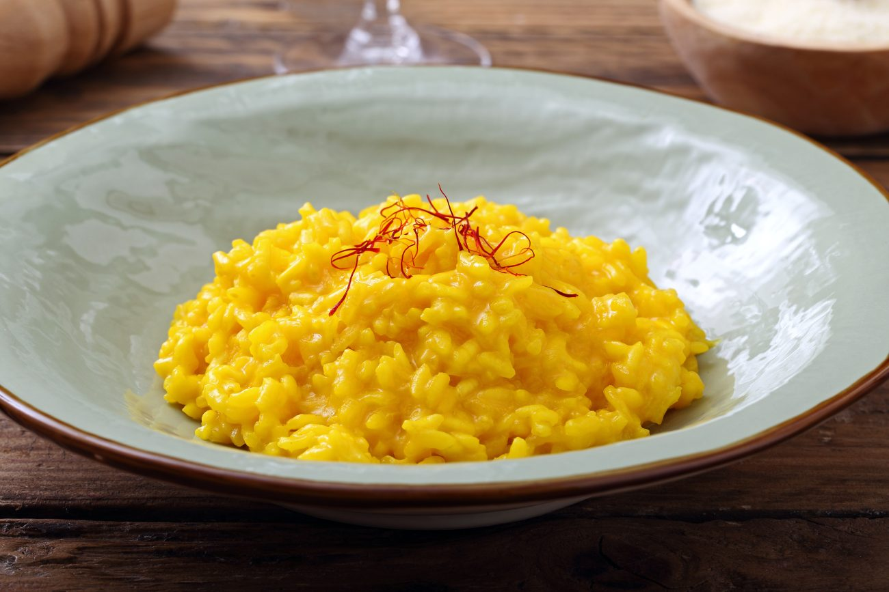

The Risotto safran is an Italian recipe with risotto rice and safran
Ingredients
Cooking
- 250 g Riz Carnaroli
- 250g Butter
- 1 Onion
- 2g Saffron
- 1L Vegetable broth
- 1 Glass of dry white wine
Reading
- 75g Butter
- 80g Greated Parmesan
Instructions
- To prepare the saffron risotto, first infuse the saffron pistils to release all the aromas. In a glass, pour a little hot water and place the saffron pistils in it. Leave to rest for at least 1 hour and at best overnight.
- Then prepare the vegetable broth, a liter of which is needed for the recipe.
- Peel and finely chop the onion (or shallot) so that it can melt well during cooking. In a large saucepan, pour 50 g of butter and melt it over low heat. Pour in the chopped onion and leave to brown for 10-15 minutes, adding broth to prevent the stir-fry from drying out: the onion should be transparent and tender.
- Once the onion is well browned, pour in the rice and grill it for 3-4 minutes, so that the grains weld together and continue to cook. Add the white wine and let it evaporate completely.
- Once the rice is well toasted, continue cooking for about 18-20 minutes, adding the very hot broth one ladle at a time, as it is absorbed by the rice: the grains should always be covered. 5 minutes before the end of cooking, pour in the water with the saffron pistils that you have infused, stir well to give the risotto a golden color.
- When the risotto is cooked, turn off the heat and add the grated parmesan and the 75 g of cold butter. Stir energetically to properly incorporate and bind all the ingredients. Leave to rest for a minute before serving on a plate, decorate with a few pistils of saffron. Enjoy!
credit to the original website https://recette-italienne.fr/recette/risotto-au-safran/
Home